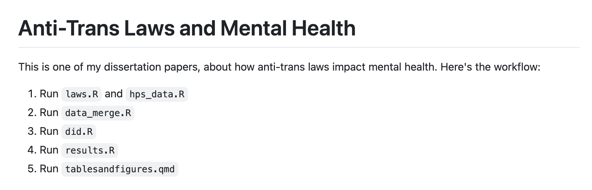

[1] "/Users/AP/Documents/work/workflow workshop"Workflow Workshop
AP Pittman | PhD Candidate in Sociology | PARISS Fellow
What is a “workflow”?
I like to think of a workflow like a recipe. It tells you how to go from separate ingredients to a finished, hopefully edible dish.


In the social science context
- Ingredients: data, references
- Kitchen appliances: programming software, reference management software, writing/presenting software
- Final dish: a research paper or presentation
What is a good project workflow?
- Self-contained and readable
- Stored somewhere safe
- Able to be changed and updated without losing past versions
By the end of today:
- Your pantry will be organized: You will have a coherent system of file management for your project.
- Your cookbook will be laminated: You will employ some kind of backup for your important files.
- You will make a test batch: You will use some kind of version control for your project.
Part I: File Management
Why it matters
Your computer is made of files!
Nothing exists without them.
Even this presentation is a group of files.
[1] "andrew's grandma's recipe.jpg" "anyone can cook.jpg"
[3] "careful spongebob.jpg" "folder icon.png"
[5] "koolaid.gif" "my dad's recipe.jpeg"
[7] "my files.png" "questionsqrcode.png"
[9] "readme_example.png" "surveyqrcode.png"
[11] "version comic.png" "word doc archive.png"
[13] "word doc.png" Down the rabbit hole…
Even some things we think of as “files” are actually multiple files in a trench coat.
For example, take a Word document. Here’s the Word document for one of my dissertation papers:

This is actually a zipfile in disguise. Here’s what happens when I unzip it:

The key
Things get really complicated, really fast.
Having an easy-to-understand file system will go a long way - and the person who will benefit the most from it is YOU.
Here’s what I do

Organizing your pantry
Put all of the relevant files for your project in one folder
Subdivide the folder into separate boxes
Part II: Backups & Storage
Why it matters
It doesn’t…until it does.
Two basic options
- Storing on your computer or another physical device you own
- Storing in the cloud
- Storing
in the cloudon someone else’s computer
Laminating your cookbook
- Open Box
- Upload the folder you just created into Box
Part III: Version Control
Why it matters
Science is iterative.
Sometimes you have to try something to realize it won’t work.
Sometimes you go down a rabbit hole and wish you hadn’t.
Sometimes your advisor asks you to do something you already did five months ago.
Sometimes you make mistakes!
Basic Test Batch: Save As
Instead of saving over your previous work, you save a new copy of the document you were working on, with a new name that reflects the version it is.
But…
Basic Test Batch: Save As

Basic Test Batch: Software with version control built in
Google Docs, for example, keeps previous versions that you can revert to.
However, this can get clunky as well: Google Docs will merge old versions to save space, and if you don’t rename your Google Doc regularly, finding the exact previous version can be hard.
I suggest using a combination of the two.
BEWARE!
NEVER write over the original data file.
Making Your Test Batch
Google Docs enjoyers
- Name your working document with a meaningful suffix (“filename_current” or “filename_working”)
- Make a copy
- Rename it “filename_v1” / “filename_date”
Microsoft Word enjoyers
- Name your working document with a meaningful suffix (“filename_current” or “filename_working”)
- Save As
- Name the new document “filename_v1” / “filename_date”
Advanced Test Batch: Git & GitHub
Git is a software that takes a “screenshot” of your project (called a “commit”) whenever you ask it to, and saves it to an archive, called a “repository.” You can go back to previous versions of a repository whenever you like, and even branch off without losing anything.
GitHub is a website that integrates with Git and stores your repository online. You can share GitHub repositories with other people and they can download everything (called “pulling”) to work on it separately on their own machine, and then upload their changes to the central repository (called “pushing”).
Garnishing the dish (concluding thoughts)
The README file: a meta-recipe
The README file gives someone picking up your recipe all the information they need to make the dish the way YOU made it.
Here’s a very basic example from my own dissertation work:

You can use the README to keep track of decisions you make about your project. It’s somewhat analagous to the qualitative research concept of “memoing.”
To AI or not to AI?
Here are some specific contexts in which I think it might be useful:
- You’re just starting out or continuing on a project, and you ask an AI tool to help you create the “scaffolding” - a directory of folders contained within a single project folder that will have everything you need to reproduce the project.
- You’ve completed a project, and ask an AI tool to produce a README file that explains in what order to run which codefiles, etc.
- You’ve completed a project, and ask an AI tool like GitHub Copilot to attempt to run your project from scratch to make sure everything works.
AI is a sharp knife!

Here are three things I would never do:
- Allow an AI tool to alter, reorganize, or delete files on my computer
- Copy and paste results from an AI tool into my terminal shell
- Upload my project into a public chatbot
Questions
Thanks for coming!
Questions didn’t get answered?
Take this 2-minute survey to help me out:
Resources
Project Management
- Zotero: free reference management software
- Obsidian: free note-taking software which stores your notes locally
- RStudio, Emacs, VSCode, Positron: IDEs (Integrated Development Environments); some are free
Backups
- Box, Drive: (mostly) free Cloud storage options
- Zotero web archive: free, backs up your references to the Cloud
- External hard drives: getting cheaper by the day
- Git/GitHub: free storage up to a certain size, also good for version control
- Backblaze: $10/month, backs up your whole computer regularly & automatically